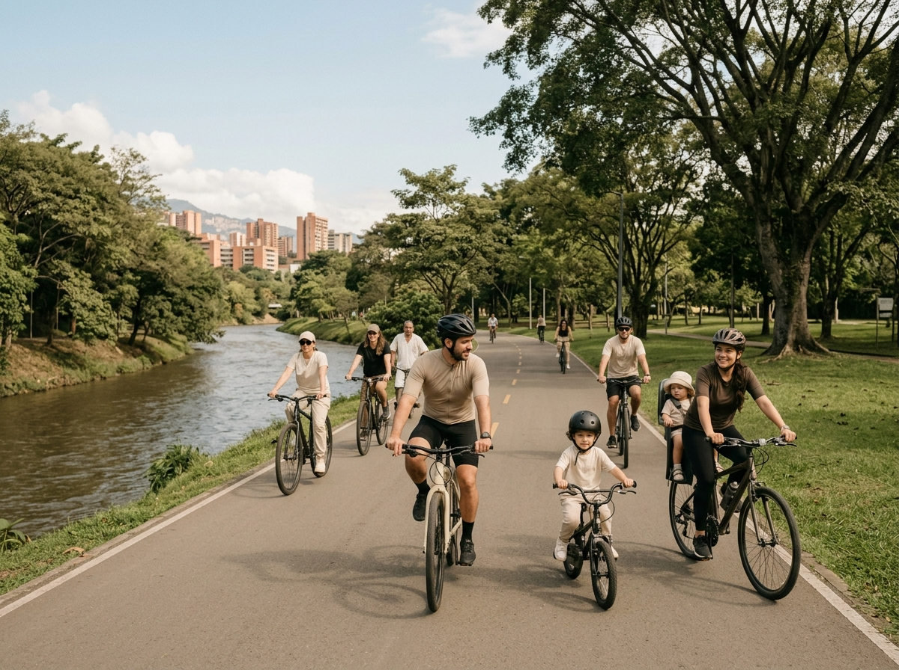

Río y Parques
Nivel: Fácil
¡Bienvenido a Rueda Libre! Somos tu mejor opción para recorrer y descubrir cada rincón de Medellín sobre dos ruedas. Si quieres conocer nuestros precios, consulta la página de Tarifas y rutas o haz clic para Reservar ahora. También puedes ver cómo encontrarnos.

Nivel: Fácil
Nivel: Medio
Nivel: Difícil
Disfruta de nuestras bicicletas urbanas, de montaña y ahora también eléctricas, en excelente estado. Cada alquiler incluye casco y candado para tu seguridad. Consulta las tarifas de alquiler.

Conoce la historia, el arte urbano y los parques principales de la ciudad junto a guías expertos locales. Revisa todos los detalles y precios de nuestros recorridos guiados.
Te ayudamos con ajustes rápidos de emergencia, calibración de frenos y revisión de presión de llantas. Este servicio incluye diagnóstico exprés gratuito.
Cómoda y liviana para las ciclorrutas.
$10.000 / hora
Reservar
Se dobla en segundos; ideal para combinar con el metro.
$12.000 / hora
Reservar
Suspensión delantera y 21 cambios para las subidas.
$15.000 / hora
Reservar
Para rutas mixtas de asfalto y destapado.
$18.000 / hora
Reservar
Asistencia eléctrica con 45 km de autonomía.
$25.000 / hora
Reservar
Para niños de 6 a 10 años.
$8.000 / hora
Reservar
Para dos personas; perfecta para pasear en pareja.
$20.000 / hora
ReservarVisítanos en nuestra sede principal o contáctanos directamente para resolver cualquier duda sobre nuestros servicios y disponibilidad.
🌐 Consulta nuestra ubicación exacta en Google Maps
📧 Escríbenos a nuestro correo electrónico oficial: hola@ruedalibre.example